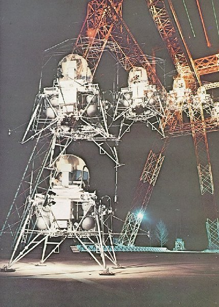

|  | Coming down easy on an unknown surface with limited fuel would take great piloting skill. This giant gantry at the Langley Research Center was used by research pilots to aid LM design, and to explore piloting techniques having the least risk of damage or upset. This multiple-exposure shot shows a landing with little forward movement at touchdown. |